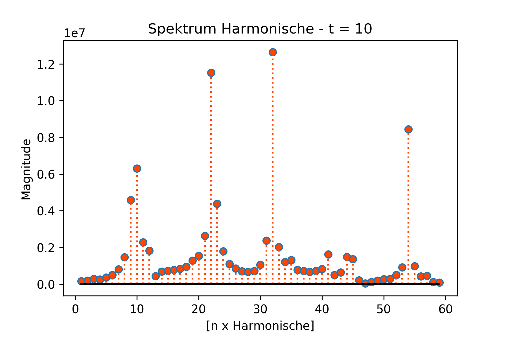

Anwendung von nichtlinearer Akustik für Ultraschall
Kolloquium
Christoph-Alexander Hermanns
Schall
Schall ist das Resultat einer sich durch ein Medium periodisch ausbreitenden Störung.
Die Störung wird durch die mechanische Verschiebung der Teilchen des Mediums verursacht.
Dieses Phänomen wird als Schallwelle charakterisiert.
Bewegung im Medium Luft
Schall breitet sich als Kompressionwelle aus.
Praktisches Beispiel
Oszillierende Bewegung
Schall - Einteilung nach Frequenz

Abhängig von der Frequzenz wird Schall eingeteilt:
Infraschall:
unter 16 Hz: Waschmaschinen, Heizungen
Hörbarer Schall:
16 Hz - 20 kHz: Sprache, Musik
Ultraschall:
über 16 kHz: Delfine, Feldermäuse - Echoortung
Die Lineare Akustik
Superpositionsprinzip
Wellen überlagern sich ungestört.
Die Schwebung ist Beispiel einer Superposition.
Die Schwebung

Die Nichtlineare Akustik
Starke Dämpfung hoher Frequenzen.
Übergänge der Zustände sind nichtlinear.
Zustandsübergänge in der Luft

Nichtlinearität ändert die Schallausbreitung

Zusätzliche Frequenzen werden erzeugt .
Anwendung der Nichtlinearität
Ultraschall zu Hörschall

In der Luft existieren zwei Felder:
- Ein Feld mit nichtlinearer Interaktion
- Ein linear akustisches Feld

Zwei amplitudenmodulierte Signale bilden eine für uns hörbare Differenzfrequenz (10 kHz).

Hörbarer Schall ist das Resultat der Nichtlinearität .
Fazit
Die Nichtlinearität der Luft kann genutzt werden
um Frequenzen aus dem Ultraschallbereich
für besondere hörakustische Anwendungen nutzbar zu machen.
Danke für die Aufmerksamkeit

Weiterführende Links
Framework für Schallausbreitung
Matlab-plugin für Ultraschall
Hersteller von Richt-Lautsprechern
Bei weiteren Fragen:
hermannschris@googlemail.com
Quellen
Page 3: Dan Russel(2016) - Longitudinal and Transverse Wave Motion abgerufen 30.01.20
Page 4: Youtube - MED EL (2013) - Understanding Sound Waves abgerufen 30.01.20
Page 5: HausTechnik Dialog - Lärm abgerufen 30.01.20
Page 6 Christoph-A. Hermanns (2020) - Kompression d. Einheitsvolumens
Page 9 - 10: Pierre-Oliver Vanberg, Martin Lacroix, Tom Servais (2019) - Multiphysics Integrated Computationl Project
{kind=link}
Page 14, 18: Youtube - Finite Elemete Method Loudspeaker bgerufen 30.01.20
Page 16, 17: Holosonics - Directivity Demonstrations abgerufen 30.01.20
Page 15: Pierre-Oliver Vanberg, Martin Lacroix, Tom Servais - DGFEM for Acoustic Wave Propagation(Repository) abgerufen 30.01.20
Page 7, 20, 25, 26: Dirk Olszweksi (2008) - Stark gerichtete Audio-Beschallung mit parametrischem Ultrschall-Lautsprecher P. 28, 49, 51
{kind=link}
Page 21 Python 3.7.4 - Christoph-A. Hermanns (2020) n. 1D Burgers Equation - cfdmoments.blogspot.com abgerufen 30.01.20
Page 24 Geogebra - Christoph-A. Hermanns (2020) - Skizze nichtlineare AmplitudenModulation abgerufen 30.01.20
Page 28: Holosonics - Museums & Galleries 30.01.20